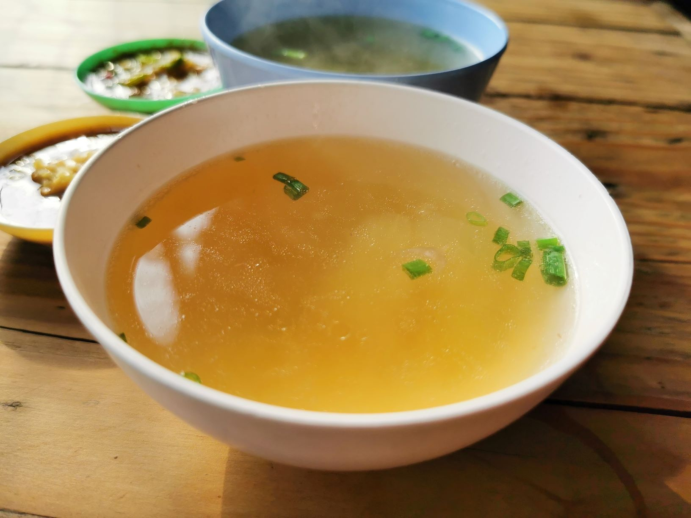

Groentebouillon
Dit gehaktbrood kan prima bij een avondgerecht, maar is ook een makkelijk gerecht voor een buffet.
Ingrediënten
- 1 el olijf- of zonnebloemolie
- 2 uien heel en ongeschild
- 2 wortelen grof gehakt
- 2 stengels bleekselderij grof gehakt
- ca. 500 g gemengde andere groenten, bijv. courgette, venkel, tomaat en prei (geen kool, te sterk van smaak. Geen aardappel, dat maakt troebel.)
- gedroogde paddenstoelen
- enkele takjes peterselie en tijm
- 1 tl peperkorrels
- 1,5 l water
Bereidingswijze
- Verhit de olie in een grote (soep)pan en fruit alle groenten zachtjes, ca. 10 minuten.
- Voeg kruiden, peperkorrels, paddenstoelen en water toe. Breng aan de kook, temper het vuur en laat zachtjes sudderen, circa 40 minuten. (Door daarna te laten inkoken (zonder deksel), wordt de smaak intenser.)
- Laat de bouillon afkoelen en schenk dan door een zeef. Bouillon die niet direct nodig is, in porties invriezen. Voor gebruik op smaak brengen met wat zout.

Extra: Als basis voor soepen en sauzen of zomaar tussendoor.